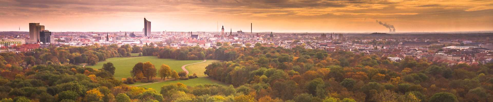

Martin Ritzert
University of Leipzig

Pascal Welke
Lancaster University Leipzig

This meetup aims to bring together the graph learning community of Leipzig, Mitteldeutschland, and beyond. We want participants to get to know each other, start collaborations and discuss science in general and graphs in particular. LoG meetup Leipzig happens two weeks before the LoG conference 2026 and acts as a local networking and meetup event. If you have a paper at log or are generally interested in graph learning and live somewhat nearby, consider meeting your local peers!
Submissions: We accept any kind of submissions for presentation at our workshop: Submissions that are accepted at LoG, submissions accepted elsewhere, submissions that are currently under review at other venues, work in progress, etc.
If necessary, we will select submissions based on relevance to the graph learning community.
Authors whose papers/posters are accepted to the workshop will have the opportunity to participate in a pitch and poster session, and several will also be chosen for oral presentation. The accepted papers/posters will be published on this website and will not be considered archival for resubmission purposes.
tbd
| 10.00h | Welcome Coffee |
| 10.30h | Begin of the Morning Program |
| 12.30h | Lunch |
| 14.00h | Begin of the Afternoon Program |
| 17.00h | Begin of Poster Session |
| 20.00h | End of Official Program |
| 9.00h | Welcome Coffee |
| 9.30h | Begin of the Morning Program |
| 12.30h | Lunch |
| 14.00h | Begin of the Afternoon Program |
| 15.30h | Closing Remarks and Best Poster Award |
| 16.00h | End of Official Program |
The meetup will take place at Lancaster University Leipzig, Nikolaistraße 10, in the Center of Leipzig.
Participation is free of charge, but a registration is required to participate.
If you want to present something, please use the submission link to register your talk or poster.
This page tries to be minimalistic in layout, bandwith, and used tools. It is hosted on github pages, using neat.css stylesheets, and bibtexparser to generate the lists of papers.